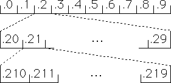

| The notion of addresses is familiar in one dimension from the
decimal expansion of real numbers in the unit interval, [0, 1]. |
| The left-most digit
of the decimal expansion of x tells into which 10th of
[0, 1] x falls. |
| The second digit tells into which hundredth - that
is, which 10th of the 10th - x falls. |
|
| And so on. Here is an illustration |
|  |
| To relate this to IFS, we need IFS rules to generate the unit
interval. There are (infinitely) many families of such rules, but for ease of
interpretation with the decimal expansion, we use |
| Ti(x) = x/10 + i/10 |
| for i = 0, ..., 9. Then |
| Ti(I) is the ith 10th, |
| TiTj(I) is the jth 100th
of the ith 10th, |
|
| and so on. Note the order of the subscripts.
This is the tricky part of understanding addresses. We say |
| the digit i is the address
of the ith10th, |
| the pair ij is the address of the
jth 100th of the ith 10th, |
|
| and so on. Notice
from left to right the address digits specify smaller intervals. |
| Addresses are unique, except at the enpoints of the intervals. This
is the general version of the familiar example .10000... = .09999... . |